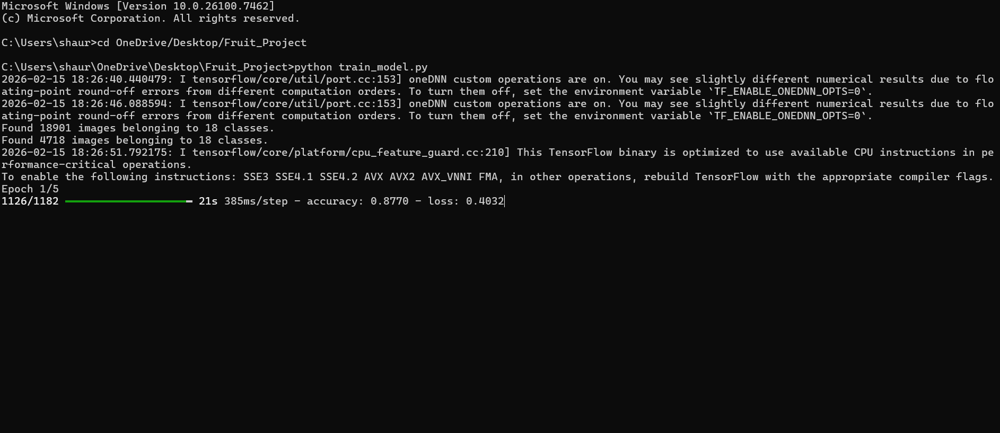
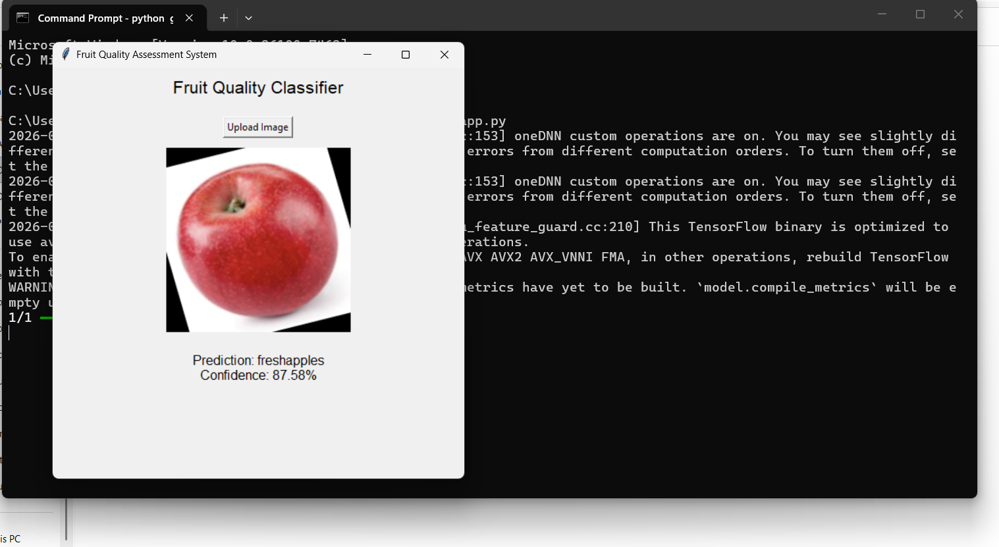

Manual fruit quality inspection is time-consuming and inconsistent. This project automates fruit freshness classification using Deep Learning.
Dataset contains fresh and rotten fruit images used to train a CNN model. Images were resized and normalized before training.
Convolutional Neural Network (CNN) built using TensorFlow and Keras. Model trained for multiple epochs and saved as .h5 file.
Model achieved approximately 87-90% training accuracy.
 Student Name: Shaurya Tiwari
Project Title: AI-Based Fruit Quality Assessment
Department: Computer Science & Engineering
Year: 2026